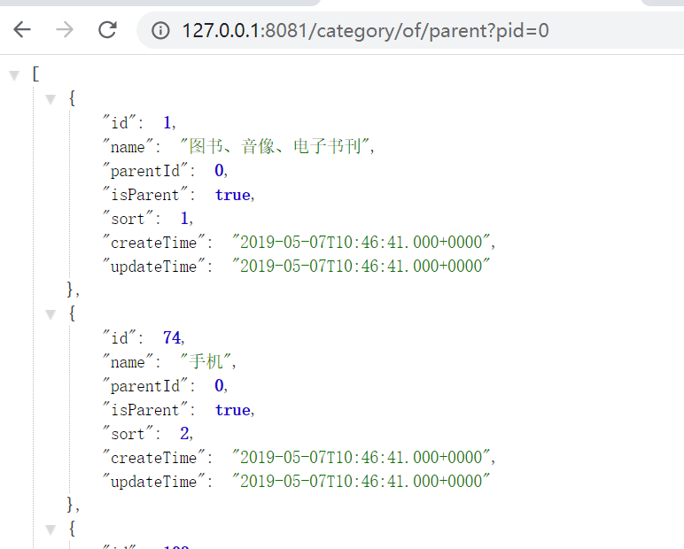
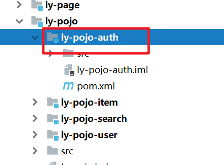
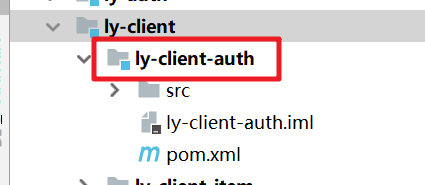

01、课程目标
实现gateway的网关鉴权
理解网关权限拦截流程
理解服务鉴权的思路
了解微服务授权流程
02、授权中心：刷新用户登录状态
1） 思路分析
JWT内部设置了token的有效期，默认是30分钟，30分钟后用户的登录信息就无效了，用户需要重新登录，用户体验不好，怎么解决呢？
JWT的缺点就凸显出来了：
- JWT是生成后无法更改，因此我们无法修改token中的有效期，也就是无法续签。
怎么办？
- 方案1：每次用户访问网站，都重新生成token。操作简单粗暴，但是token写入频率过高，效率实在不好。
- 方案2：cookie即将到期时，重新生成一个token。比如token有效期为30分钟，当用户请求我们时，我们可以判断如果用户的token有效期还剩下15分钟，那么就重新生成token。

我们采用方案2，在验证登录的逻辑中，加入一段时间判断逻辑，如果距离有效期不足15分钟，则生成一个新token：
2） 代码实现
提供刷新时间点的配置文件

修改解析配置文件的配置类

修改AuthService中的verify方法
package com.leyou.auth.service;
import com.leyou.auth.config.JwtProperties;
import com.leyou.common.auth.pojo.Payload;
import com.leyou.common.auth.pojo.UserInfo;
import com.leyou.common.auth.utils.JwtUtils;
import com.leyou.common.exception.pojo.ExceptionEnum;
import com.leyou.common.exception.pojo.LyException;
import com.leyou.common.utils.CookieUtils;
import com.leyou.user.client.UserClient;
import com.leyou.user.pojo.User;
import org.joda.time.DateTime;
import org.springframework.beans.factory.annotation.Autowired;
import org.springframework.stereotype.Service;
import javax.servlet.http.HttpServletRequest;
import javax.servlet.http.HttpServletResponse;
import java.util.Date;
/**
* 授权业务
*/
@Service
public class AuthService {
@Autowired
private UserClient userClient;
@Autowired
private JwtProperties jwtProps;
public void login(String username, String password, HttpServletResponse response) {
//1. 判断用户名和密码是否正确
User loginUser = userClient.findUserByNameAndPwd(username, password);
UserInfo userInfo = new UserInfo(loginUser.getId(),loginUser.getUsername(),"admin");
//2.生成token，并把token写出到respone中
this.generateTokenAndWriteCookie(userInfo,response);
}
/**
* 生成token，并把token写出到respone中
*/
public void generateTokenAndWriteCookie(UserInfo info,HttpServletResponse response){
//2.利用JwtUtils+私钥生成加密token
String token = JwtUtils.generateTokenExpireInMinutes(info, jwtProps.getPrivateKey(), jwtProps.getCookie().getExpire());
//3）把token写入Cookie对象中
CookieUtils.newCookieBuilder()
.response(response)
.name(jwtProps.getCookie().getCookieName())
.value(token)
.domain(jwtProps.getCookie().getCookieDomain())
.build();
}
public UserInfo verify(HttpServletRequest request,HttpServletResponse response) {
//1.从request取出cookie的token
String token = CookieUtils.getCookieValue(request, jwtProps.getCookie().getCookieName());
//2. 验证token是否合法
Payload<UserInfo> payload = null;
try {
payload = JwtUtils.getInfoFromToken(token, jwtProps.getPublicKey(), UserInfo.class);
} catch (Exception e) {
throw new LyException(ExceptionEnum.UNAUTHORIZED);
}
//3. 取出token中的载荷UserInfo数据
UserInfo info = payload.getInfo();
//刷新token过期时间
//1.取出当前token的过期时间
Date expireTime = payload.getExpiration();
//2.计算刷新时间=过期时间-15
DateTime refreshTime = new DateTime(expireTime).minusMinutes(jwtProps.getCookie().getRefreshTime());
//3.判断刷新时间<当前时间，重新生成token
//isBeforeNow(): 判断指定时间是否在当前时间之前
if(refreshTime.isBeforeNow()){
//重新生成token
generateTokenAndWriteCookie(info,response);
}
//4. 返回
return info;
}
}
AuthController方法添加了response对象：
/**
* 查询登录用户信息
*/
@GetMapping("/verify")
public ResponseEntity<UserInfo> verify(HttpServletRequest request,HttpServletResponse response){
UserInfo userInfo = authService.verify(request,response);
return ResponseEntity.ok(userInfo);
}03、授权中心：退出登录的思路分析
首页左上角，登录后除了显示用户名，还有一个退出登录按钮：

点击这个按钮，该如何实现退出登录呢？
1）思路分析
回想下以前怎么实现的：
- 用户点击退出，发起请求到服务端
- 服务端删除用户session即可
我们现在登录是无状态的，也就没有session，那该怎么办呢？
有同学会想，太简单了，直接删除cookie就可以了。
别忘了，我们设置了httponly，JS无法操作cookie。因此，删除cookie也必须发起请求到服务端，由服务端来删除cookie。
那么，是不是删除了cookie，用户就完成了退出登录呢？
设想一下，删除了cookie，只是让用户在当前浏览器上的token删除了，但是这个token依然是有效的！这就是JWT的另外一个缺点了，无法控制TOKEN让其失效。如果用户提前备份了token，那么重新填写到cookie后，登录状态依然有效。
所以，我们不仅仅要让浏览器端清除cookie，而且要让这个cookie中的token失效！
2）失效Token黑名单
怎样才能实现这样的效果呢？
大家肯定能想到很多办法，但是无论哪种思路，都绕不可一点：JWT的无法修改特性。因此我们不能修改token来标记token无效，而是在服务端记录token状态，于是就违背了无状态性的特性。
如果要记录每一个token状态，会造成极大的服务端压力，我提供一种思路，可以在轻量级数据量下，解决这个问题：
- 用户进行注销类型操作时（比如退出、修改密码），校验token有效性，并解析token信息
- 把token的id存入redis，并设置有效期为token的剩余有效期
- 校验用户登录状态的接口，除了要正常逻辑外，还必须判断token的id是否存在于redis
- 如果存在，则证明token无效；如果不存在，则证明有效
等于是在Redis中记录失效token的黑名单，黑名单的时间不用太长，最长也就是token的有效期：30分钟，因此服务端数据存储压力会减少。
04、授权中心：退出登录的实现
步骤梳理：
- 前端页面发起请求到服务端
- 服务端校验token是否有效，并解析token
- 将token的id存入redis，并设置有效期为token的剩余有效期
- 设置cookie有效期为0，即可删除cookie
1）准备redis环境
这里要用到Redis，所以先在ly-auth引入Redis依赖和配置：
<dependency>
<groupId>org.springframework.boot</groupId>
<artifactId>spring-boot-starter-data-redis</artifactId>
</dependency>在application.yml中编写配置：
spring:
redis:
host: 127.0.0.12）提供退出登录处理器
controller分析：
- 请求方式：POST
- 请求路径：/logout
- 请求参数：无，但要cookie中的token，因此需要request和response
- 返回值：无，但要删除cookie
/**
* 用户退出登录
*/
@PostMapping("/logout")
public ResponseEntity<Void> logout(HttpServletRequest request,HttpServletResponse response){
authService.logout(request,response);
return ResponseEntity.status(HttpStatus.NO_CONTENT).build();
}3）提供退出登录service
public void logout(HttpServletRequest request, HttpServletResponse response) {
//取出token
String token = CookieUtils.getCookieValue(request, jwtProps.getCookie().getCookieName());
//1.删除浏览器的Cookie
CookieUtils.deleteCookie(
jwtProps.getCookie().getCookieName(),
jwtProps.getCookie().getCookieDomain(),
response);
//2.把当前token加入黑名单
addTokenToBackList(token);
}
/**
* 将token加入黑名单
* @param token
*/
public void addTokenToBackList(String token) {
//1.取出token的ID
Payload<UserInfo> payload = null;
try {
payload = JwtUtils.getInfoFromToken(token, jwtProps.getPublicKey(), UserInfo.class);
} catch (Exception e) {
throw new LyException(ExceptionEnum.UNAUTHORIZED);
}
String tokenId = payload.getId();
//2.存入redis数据库
//获取过期时间
Date expiration = payload.getExpiration();
redisTemplate.opsForValue().set("TOKEN_BACK_"+tokenId,"1",expiration.getTime()-System.currentTimeMillis(), TimeUnit.MILLISECONDS);
}4）修改登录校验方法verify逻辑
登录校验不仅仅要看JWT是否有效，还要检查redis中是否已经存在

完整代码：
public UserInfo verify(HttpServletRequest request, HttpServletResponse response) {
//1.从Cookie获取token
String token = CookieUtils.getCookieValue(request,jwtProps.getCookie().getCookieName());
//2.验证token是否合法
Payload<UserInfo> payload = null;
try {
payload = JwtUtils.getInfoFromToken(token, jwtProps.getPublicKey(), UserInfo.class);
} catch (Exception e) {
throw new LyException(ExceptionEnum.UNAUTHORIZED);
}
//===加入验证token是否在黑名单逻辑====
if(redisTemplate.hasKey("TOKEN_BACK_"+payload.getId())){
throw new LyException(ExceptionEnum.UNAUTHORIZED);
}
//===登录状态刷新逻辑=====
//1.获取当前token的过期时间
Date expiration = payload.getExpiration();
//2.计算刷新时间=过期时间-15
DateTime refreshTime = new DateTime(expiration).minusMinutes(jwtProps.getCookie().getRefreshTime());
//3.如果刷新时间<当前时间，则重新生成token
if(refreshTime.isBeforeNow()){
//把旧的token存入黑名单中
addTokenToBackList(token);
//生成新的token
createTokenAndWriteCookie(payload.getInfo(),response);
}
//3.从token中取出用户信息
return payload.getInfo();
}05、网关权限控制：网关权限过滤思路分析
1）思路
我们实现了登录相关的几个功能，也就是给用户授权。接下来，用户访问我们的系统，我们还需要根据用户的身份，判断是否有权限访问微服务资源，就是鉴权。
大部分的微服务都必须做这样的权限判断，但是如果在每个微服务单独做权限控制，每个微服务上的权限代码就会有重复，如何更优雅的完成权限控制呢？
我们可以在整个服务的入口完成服务的权限控制，这样微服务中就无需再做了，如图：

3）流程分析
权限控制，一般有粗粒度、细粒度控制之分，但不管哪种，前提是用户必须先登录。知道访问者是谁，才能知道这个人具备怎样的权限，可以访问那些服务资源（也就是微服务接口）。
因此，权限控制的基本流程是这样：
- 1）获取用户的登录凭证jwt
- 2）解析jwt，获取用户身份
- 如果解析失败，证明没有登录，返回401
- 如果解析成功，继续向下
- 3）根据身份，查询用户权限信息
- 4）获取当前请求资源（微服务接口路径）
- 5）判断是否有访问资源的权限
一般权限信息会存储到数据库，会对应角色表和权限表：
- 角色：就是身份，例如普通用户，金钻用户，黑钻用户，商品管理员
- 权限：就是可访问的访问资源，如果是URL级别的权限控制，包含请求方式、请求路径、等信息
一个角色一般会有多个权限，一个权限也可以属于多个用户，属于多对多关系。根据角色可以查询到对应的所有权限，再根据权限判断是否可以访问当前资源即可。
在我们的功能中，因为还没有写权限功能，所以暂时只有一个角色，就是普通用户，可以访问的是商品及分类品牌等的查询功能，以及自己的信息。以后编写权限服务时，再补充相关业务。

06、网关权限控制：在网关实现权限校验
接下来我们就来做权限的校验，权限的校验我们在网关来做，在网关中怎么做呢？
我们使用的是SpringCloudGateway的全局过滤器来实现即可，在过滤器中实现，我们还需要对token进行解析，所以我们需要引入ly-common依赖。
1）引入依赖
ly-gateway引入如下依赖
<dependency>
<groupId>com.leyou</groupId>
<artifactId>ly-common</artifactId>
<version>1.0-SNAPSHOT</version>
</dependency>2）提供配置文件
ly:
jwt:
pubKeyPath: D:\ly_guangzhou126\software\rsa_key\jwt_key.pub # 公钥地址
cookie:
cookieName: LY_TOKEN # cookie名称3）提供解析配置文件的配置类
package com.leyou.gateway.config;
import com.leyou.common.auth.RsaUtils;
import lombok.Data;
import org.springframework.boot.context.properties.ConfigurationProperties;
import org.springframework.stereotype.Component;
import javax.annotation.PostConstruct;
import java.security.PrivateKey;
import java.security.PublicKey;
/**
* 读取jwt参数
*/
@Data
@Component
@ConfigurationProperties(prefix = "ly.jwt")
public class JwtProperties {
private String pubKeyPath;
private PublicKey publicKey;
@PostConstruct // 代表初始化方法
public void initMethod() throws Exception {
publicKey = RsaUtils.getPublicKey(pubKeyPath);
}
private CookiePojo cookie = new CookiePojo();
@Data
public class CookiePojo{
private String cookieName;//cookie名称
}
}
4）编写过滤器：AuthFilter
package com.leyou.gateway.filter;
import com.leyou.common.auth.utils.JwtUtils;
import com.leyou.common.auth.utils.Payload;
import com.leyou.common.auth.utils.UserInfo;
import com.leyou.common.exception.pojo.ExceptionEnum;
import com.leyou.common.exception.pojo.LyException;
import com.leyou.common.utils.CookieUtils;
import com.leyou.gateway.config.JwtProperties;
import org.springframework.beans.factory.annotation.Autowired;
import org.springframework.cloud.gateway.filter.GatewayFilterChain;
import org.springframework.cloud.gateway.filter.GlobalFilter;
import org.springframework.core.Ordered;
import org.springframework.http.HttpStatus;
import org.springframework.http.server.reactive.ServerHttpRequest;
import org.springframework.http.server.reactive.ServerHttpResponse;
import org.springframework.stereotype.Component;
import org.springframework.web.server.ServerWebExchange;
import reactor.core.publisher.Mono;
/**
* 授权过滤器
*/
@Component
public class AuthFilter implements GlobalFilter,Ordered{
@Autowired
private JwtProperties jwtProps;
/**
* 过滤的逻辑
* @param exchange
* @param chain
* @return
*/
@Override
public Mono<Void> filter(ServerWebExchange exchange, GatewayFilterChain chain) {
//1. 从请求中获取用户token，如果没有token直接拒绝
ServerHttpRequest request = exchange.getRequest();
ServerHttpResponse response = exchange.getResponse();
/**
* HttpServletRequest是Oracle提供的，原生的
* ServerHttpRequest是Spring提供的，是对HttpServletRequest的二次封装，提供出新的方法来操作request
*/
//2. 校验用户token是否合法，如果不合法直接拒绝
Payload<UserInfo> payload = null;
try {
/**
* getCookies():获取所有Cookie数据
* getFirst(): 获取第一个指定名称的Cookie
*/
String token = request.getCookies().getFirst(jwtProps.getCookie().getCookieName()).getValue();
payload = JwtUtils.getInfoFromToken(token,jwtProps.getPublicKey(), UserInfo.class);
} catch (Exception e) {
//throw new LyException(ExceptionEnum.UNAUTHORIZED);
//返回401状态码
response.setStatusCode(HttpStatus.UNAUTHORIZED);
//中止请求
return response.setComplete();
}
//放行
return chain.filter(exchange);
}
/**
* 配置过滤器的顺序
* 返回的整数越小，优先级越高
* @return
*/
@Override
public int getOrder() {
return 1;
}
}
重启网关后，测试发现用户没有登录时无法访问商品微服务（401代表无权访问）：

证明拦截器生效了！
但是问题来了，现在用户登录不了，因为登录请求也被网关拦截了！

07、网关权限控制：网关登录拦截白名单
此时我们尝试再次登录：

登录接口也被拦截器拦截了！！！
要注意，并不是所有的路径我们都需要拦截，例如：
登录校验接口：
/auth/login注册接口：
/user/register数据校验接口：
/user/check/发送验证码接口：
/user/code搜索接口：
/search/**
另外，跟后台管理相关的接口，因为我们没有做登录和权限，因此暂时都放行，但是生产环境中要做登录校验：
- 后台商品服务：
/item/**
所以，我们需要在拦截时，配置一个白名单，如果在名单内，则不进行拦截。
在application.yaml中添加规则：
ly:
filter:
allowPaths:
- /api/auth/login
- /api/search
- /api/user/register
- /api/user/check
- /api/user/code
- /api/item然后我们添加属性类读取这些属性：

内容：
package com.leyou.gateway.config;
import lombok.Data;
import org.springframework.boot.context.properties.ConfigurationProperties;
import org.springframework.stereotype.Component;
import java.util.List;
/**
* 读取白名单列表
*/
@Data
@Component
@ConfigurationProperties(prefix = "ly.filter")
public class FilterProperties {
private List<String> allowPaths;
}
在AuthFilter中添加白名单逻辑，先注入该属性类：

具体代码：
package com.leyou.gateway.filter;
import com.leyou.common.auth.utils.JwtUtils;
import com.leyou.common.auth.utils.Payload;
import com.leyou.common.auth.utils.UserInfo;
import com.leyou.common.exception.pojo.ExceptionEnum;
import com.leyou.common.exception.pojo.LyException;
import com.leyou.common.utils.CookieUtils;
import com.leyou.gateway.config.FilterProperties;
import com.leyou.gateway.config.JwtProperties;
import org.springframework.beans.factory.annotation.Autowired;
import org.springframework.cloud.gateway.filter.GatewayFilterChain;
import org.springframework.cloud.gateway.filter.GlobalFilter;
import org.springframework.core.Ordered;
import org.springframework.http.HttpStatus;
import org.springframework.http.server.reactive.ServerHttpRequest;
import org.springframework.http.server.reactive.ServerHttpResponse;
import org.springframework.stereotype.Component;
import org.springframework.web.server.ServerWebExchange;
import reactor.core.publisher.Mono;
import java.util.List;
/**
* 授权过滤器
*/
@Component
public class AuthFilter implements GlobalFilter,Ordered{
@Autowired
private JwtProperties jwtProps;
@Autowired
private FilterProperties filterProps;
/**
* 过滤的逻辑
* @param exchange
* @param chain
* @return
*/
@Override
public Mono<Void> filter(ServerWebExchange exchange, GatewayFilterChain chain) {
//1. 从请求中获取用户token，如果没有token直接拒绝
ServerHttpRequest request = exchange.getRequest();
ServerHttpResponse response = exchange.getResponse();
/**
* HttpServletRequest是Oracle提供的，原生的
* ServerHttpRequest是Spring提供的，是对HttpServletRequest的二次封装，提供出新的方法来操作request
*/
//=======加入网关白名单=========
//1.获取当前访问的URL
//request.getURI().toString();
String uri = request.getURI().getPath(); // /api/item/category/of/parent
//2.判断当前访问的URL是否在白名单，如果在，则访问，不在则拒绝
List<String> allowPaths = filterProps.getAllowPaths();
for(String allowPath:allowPaths){
if(uri.contains(allowPath)){
//放行
return chain.filter(exchange);
}
}
//2. 校验用户token是否合法，如果不合法直接拒绝
Payload<UserInfo> payload = null;
try {
/**
* getCookies():获取所有Cookie数据
* getFirst(): 获取第一个指定名称的Cookie
*/
String token = request.getCookies().getFirst(jwtProps.getCookie().getCookieName()).getValue();
payload = JwtUtils.getInfoFromToken(token,jwtProps.getPublicKey(), UserInfo.class);
} catch (Exception e) {
//throw new LyException(ExceptionEnum.UNAUTHORIZED);
//返回401状态码
response.setStatusCode(HttpStatus.UNAUTHORIZED);
//中止请求
return response.setComplete();
}
//放行
return chain.filter(exchange);
}
/**
* 配置过滤器的顺序
* 返回的整数越小，优先级越高
* @return
*/
@Override
public int getOrder() {
return 1;
}
}
08、微服务间鉴权：微服务间鉴权的思路分析
1）为什么要做微服务间鉴权
用户访问我们的微服务，都需要经过网关作为请求入口，网关对用户身份进行验证，从而保证微服务的安全。但是，大家有没有思考过这样一个问题：
如果你的微服务地址不小心暴露了呢？
一旦微服务地址暴露，用户就可以绕过网关，直接请求微服务，那么我们之前做的一切权限控制就白费了!
因此，我们的每个微服务都需要对调用者的身份进行认证，如果不是有效的身份，则应该阻止访问。
以商品微服务 和 搜索微服务为例。

正常情况下，我们应该通过访问网关来请求商品微服务和搜索微服务。但是我们尝试直接访问商品微服务，发现也是没问题的！这显然是不对的！
http://127.0.0.1:8081/category/of/parent?pid=0

怎么办呢？这就需要确定（限制）每个微服务的合法调用者啦！
用户鉴权
一、用户登录
1）浏览器携带用户名和密码请求授权中心
2）授权中心远程调用用户微服务判断用户名和密码是否正确
3）授权中心生成token（包含登录用户信息）
4）token写入Cookie，返回给浏览器
二、用户鉴权
1）用户请求网关，携带token
2）在网关中取出token
3）校验token是否合法
4）合法则放行
服务鉴权
一、服务登录
1）在消费方编写定时任务携带服务名和服务密码请求授权中心
2）授权中心调用判断服务名称和服务密码是否正确
3）授权中心生成token（包含服务的信息，包含该服务目标列表）
4）把token返回给消费者
二、服务鉴权
1）消费者在请求携带服务token到提供方微服务
2）在提供方微服务取出服务token
3）校验服务token是否合法
4）合法则放行，判断当前服务是否在目录列表中
5）只有在目录列表中，才放行
2）如何确定合法调用者（表结构分析）
那怎么确定（限制）每个微服务的合法调用者呢？我们首先需要把这些合法的调用者身份存入数据库。
tb_application和tb_application_privilege表存储了每个微服务合法调用者信息。

查询某个微服务的合法调用者列表SQL语句：
-- 商品微服务的合法调用者列表
select ap.target_id from tb_application_privilege ap where ap.service_id = 2结果为：

-- 查询某个服务的目标服务列表 service_name
SELECT
apppri.`target_id`
FROM
tb_application app,tb_application_privilege apppri
WHERE
app.`id` = apppri.`service_id`
AND app.`service_name` = 'user-service'
3）微服务间鉴权的流程（重要）
接下来我们看看如何实现微服务间鉴权，其实整个流程跟之前浏览器用户登录和鉴权非常类似。只是之前浏览器用户是手动输入用户名和密码，而微服务间鉴权则需要自动登录，这里就需要用到定时任务技术来实现自动登录（后面会讲到）。另外，因为调用机制不同，需要鉴权的微服务可以分为两类，一类是网关，一类网关外的其他微服务。以上面的商品微服务 和 搜索微服务 为例，我们梳理出微服务间鉴权的整体流程：
1）第一步：授权中心需要提供给所有微服务生成Token的Feign方法（类似于判断用户名和密码是否正确）。
2）第二步：网关微服务和搜索微服务编写定时任务，每隔1天（24小时）定时自动调用授权中心的Feign接口获取Token，并存储在内存中。
3）第三步：网关微服务（网关过滤器） 和 搜索微服务（Feign过滤器）发出请求时，必须在请求头携带之前的Token。
一个请求有请求路径 请求体 请求头
请求路径 路径容易暴露
请求体 请求体可能携带参数，已经被占用了，所以不合适
请求头 最合适
4）第四步：商品微服务 和 搜索微服务 提供拦截器校验Token是否合法，以及是否为合法调用者请求。
上面的 (1) 和（2）步骤，称为 服务登录认证（和用户登录认证一样）
上面的 (3 和（4）步骤 ，称为 服务权限校验（和用户权限校验一样）

09、微服务间鉴权：提供生成Token方法(1)-准备工作
接下来我们要进行微服务间鉴权的第一步，在授权中心提供为微服务生成Token的方法，但不应该任何请求授权中心的微服务都要为其生成Token，这样不够安全！应该在生成Token前，起码查询该微服务是为一个合法的微服务方法（相当于之前用户的登录方法）
接着，我们在ly-auth项目提供查询合法微服务的方法。
1）ApplicationInfo实体类
在ly-pojo模块中创建一个ly-pojo-auth子模块

在ly-pojo-auth中创建于数据库对应的持久对象：
package com.leyou.auth.entity;
import com.baomidou.mybatisplus.annotation.IdType;
import com.baomidou.mybatisplus.annotation.TableId;
import com.baomidou.mybatisplus.annotation.TableName;
import lombok.Data;
import java.util.Date;
/**
* 应用服务实体
*/
@Data
@TableName("tb_application")
public class ApplicationInfo {
@TableId(type = IdType.AUTO)
private Long id;
/**
* 服务名称
*/
private String serviceName;
/**
* 服务密钥
*/
private String secret;
/**
* 服务信息
*/
private String info;
/**
* 创建时间
*/
private Date createTime;
/**
* 更新时间
*/
private Date updateTime;
}2）ly-auth导入依赖
在ly-auth导入相关依赖：
<!--mybatis-plus-->
<dependency>
<groupId>com.baomidou</groupId>
<artifactId>mybatis-plus-boot-starter</artifactId>
<version>3.1.0</version>
</dependency>
<dependency>
<groupId>mysql</groupId>
<artifactId>mysql-connector-java</artifactId>
</dependency>
<dependency>
<groupId>com.leyou</groupId>
<artifactId>ly-pojo-auth</artifactId>
<version>1.0-SNAPSHOT</version>
</dependency>3）application.yml配置
然后在application.yml配置文件中添加与数据库相关配置：
server:
port: 8087
spring:
application:
name: auth-service
datasource:
driver-class-name: com.mysql.cj.jdbc.Driver
url: jdbc:mysql:///leyou?serverTimezone=UTC&characterEncoding=utf8&useUnicode=true&useSSL=true
username: root
password: root
cloud:
nacos:
discovery:
server-addr: 127.0.0.1:8848
redis:
host: 127.0.0.1
port: 6379
mybatis-plus:
type-aliases-package: com.leyou.auth.pojo
configuration:
map-underscore-to-camel-case: true
# 修改映射文件的路径
mapper-locations: classpath:mappers/*.xml
#开启日志显示，用于显示mybatis的sql语句
logging:
level:
com.leyou: debug
ly:
jwt:
pubKeyPath: D:\leyou_projects\javaee142\software\rsa-key\rsa-key.pub # 公钥地址
priKeyPath: D:\leyou_projects\javaee142\software\rsa-key\rsa-key # 私钥地址
cookie:
expire: 30 #过期时间设置 单位分钟
refreshTime: 15 # 刷新时间间隔
cookieName: LY_TOKEN # cookie名称
cookieDomain: leyou.com # cookie的域4）启动类添加注解
然后在启动类上引入mapper扫描包：
@SpringBootApplication
@EnableDiscoveryClient
@EnableFeignClients
@MapperScan("com.leyou.auth.mapper")
public class LyAuthApplication {
public static void main(String[] args) {
SpringApplication.run(LyAuthApplication.class, args);
}
}5）编写Mapper接口
编写mapper继承通用mapper
package com.leyou.auth.mapper;
import com.leyou.auth.entity.ApplicationInfo;
import com.leyou.common.mapper.BaseMapper;
/**
* @author 黑马程序员
*/
public interface ApplicationInfoMapper extends BaseMapper<ApplicationInfo> {
}6）编写Mapper配置
另外，将来一部分业务需要手写sql，可以先定义一个mapper文件：

编写基本信息：
<?xml version="1.0" encoding="UTF-8"?>
<!DOCTYPE mapper PUBLIC "-//mybatis.org//DTD Mapper 3.0//EN"
"http://mybatis.org/dtd/mybatis-3-mapper.dtd">
<mapper namespace="com.leyou.auth.mapper.ApplicationInfoMapper">
</mapper>10、微服务间鉴权：提供生成Token方法(2)-验证方法
接着，我们在ly-auth提供判断微服务的名称和密钥是否正确的方法（相当于之前的判断用户名密码是否正确的方法）。
因为对服务密钥需要加密校验，所以需要引入BCrypt相关配置
1） 初始化加密对象
package com.leyou.auth.config;
import org.springframework.context.annotation.Bean;
import org.springframework.context.annotation.Configuration;
import org.springframework.security.crypto.bcrypt.BCryptPasswordEncoder;
/**
* 加密工具初始化
*/
@Configuration
public class PasswordConfig {
@Bean
public BCryptPasswordEncoder passwordEncoder(){
return new BCryptPasswordEncoder();
}
}
2） 提供service方法
/**
* 判断服务名和服务密钥是否正确
*/
public ApplicationInfo findAppByServiceNameAndSecret(String serviceName,String secret){
//1.判断服务名称是否存在
ApplicationInfo info = new ApplicationInfo();
info.setServiceName(serviceName);
QueryWrapper<ApplicationInfo> queryWrapper = Wrappers.query(info);
ApplicationInfo loginAppInfo = applicationInfoMapper.selectOne(queryWrapper);
if(loginAppInfo==null){
throw new LyException(ExceptionEnum.INVALID_SERVER_ID_SECRET);
}
//2.判断密码是否正确
if(!passwordEncoder.matches(secret,loginAppInfo.getSecret())){
throw new LyException(ExceptionEnum.INVALID_SERVER_ID_SECRET);
}
//3.正确，返回对象
return loginAppInfo;
}3）编写测试类
package com.leyou;
import com.leyou.auth.pojo.ApplicationInfo;
import com.leyou.auth.service.AuthService;
import org.junit.Test;
import org.junit.runner.RunWith;
import org.springframework.beans.factory.annotation.Autowired;
import org.springframework.boot.test.context.SpringBootTest;
import org.springframework.test.context.junit4.SpringJUnit4ClassRunner;
/**
*
*/
@RunWith(SpringJUnit4ClassRunner.class)
@SpringBootTest(classes = LyAuthApplication.class)
public class AuthServiceTest {
@Autowired
private AuthService authService;
@Test
public void testfindAppByServiceNameAndSecret(){
ApplicationInfo info = authService.findAppByServiceNameAndSecret("api-gateway","api-gateway");
System.out.println(info);
}
}
11、微服务间鉴权：提供生成Token方法(3)-方法实现
这一步，我们就要在ly-auh项目编写生成token的方法啦（相当于之前的登录方法）
1） 提供生成服务token所需配置文件
ly:
jwt:
pubKeyPath: D:\leyou_projects\javaee143\software\rsa\rsa-key.pub # 公钥地址
priKeyPath: D:\leyou_projects\javaee143\software\rsa\rsa-key # 私钥地址
cookie:
expire: 30 #过期时间设置 单位分钟
refreshTime: 15 # 刷新token的时间间隔
cookieName: LY_TOKEN # cookie名称
cookieDomain: leyou.com # cookie的域
app:
expire: 1440 #过期时间设置 单位分钟2） 修改解析配置文件的配置类
package com.leyou.auth.config;
import com.leyou.common.auth.utils.RsaUtils;
import lombok.Data;
import org.springframework.boot.context.properties.ConfigurationProperties;
import org.springframework.stereotype.Component;
import javax.annotation.PostConstruct;
import java.security.PrivateKey;
import java.security.PublicKey;
/**
* 读取jwt认证相关的属性
*/
@Component
@Data
@ConfigurationProperties(prefix = "ly.jwt")
public class JwtProperties {
......
private AppPojo app = new AppPojo();
@Data
public class AppPojo{
private Integer expire;//过期时间
}
......
}
3） 提供返回token的客户端信息对象
ly-common项目中建立存储登录应用信息的对象
package com.leyou.common.auth.pojo;
import lombok.AllArgsConstructor;
import lombok.Data;
import lombok.NoArgsConstructor;
import java.util.List;
/**
* 存放JWt的载荷中的登录服务信息
*/
@Data
@AllArgsConstructor
@NoArgsConstructor
public class AppInfo {
private Long id;//服务ID
private String serviceName;//当前服务名称
private List<String> targetList;//当前服务的目录服务列表
}
4） 提供控制器
/**
* 给其他微服务申请合法的服务token
*/
@GetMapping("/authorization")
public ResponseEntity<String> authorization(@RequestParam("serviceName") String serviceName,
@RequestParam("secret") String secret){
String appToken = authService.authorization(serviceName,secret);
return ResponseEntity.ok(appToken);
}5） 提供service
public String authorization(String serviceName, String secret) {
//1.验证服务名和密码是否正确
ApplicationInfo loginAppInfo = findAppByServiceNameAndSecret(serviceName,secret);
//2.创建封装服务信息的对象：AppInfo
//2.1 从数据库查询当前服务的目标服务列表
List<String> targetList = applicationInfoMapper.findTargetList(serviceName);
//2.2 封装AppInfo对象
AppInfo appInfo = new AppInfo(loginAppInfo.getId(),loginAppInfo.getServiceName(),targetList);
//3.生成服务token
String appToken = JwtUtils.generateTokenExpireInMinutes(appInfo,jwtProps.getPrivateKey(),jwtProps.getApp().getExpire());
//4.返回服务token
return appToken;
}6）提供Mapper方法
package com.leyou.auth.mapper;
import com.baomidou.mybatisplus.core.mapper.BaseMapper;
import com.leyou.auth.pojo.ApplicationInfo;
import java.util.List;
/**
*
*/
public interface ApplicationInfoMapper extends BaseMapper<ApplicationInfo>{
List<String> findTargetList(String serviceName);
}
7）配置Mapper文件
<?xml version="1.0" encoding="UTF-8"?>
<!DOCTYPE mapper PUBLIC "-//mybatis.org//DTD Mapper 3.0//EN"
"http://mybatis.org/dtd/mybatis-3-mapper.dtd">
<mapper namespace="com.leyou.auth.mapper.ApplicationInfoMapper">
<select id="findTargetList" resultType="string">
SELECT
service_name
FROM tb_application
WHERE id
IN (
SELECT
pri.target_id
FROM tb_application app,tb_application_privilege pri
WHERE app.id = pri.service_id
AND app.service_name = #{serviceName}
)
</select>
</mapper>12、微服务间鉴权：提供生成Token方法(4)-Feign接口
1） 创建对外提供feign接口的模块

2） 导入jar包
<dependencies>
<dependency>
<groupId>com.leyou</groupId>
<artifactId>ly-pojo-auth</artifactId>
<version>1.0-SNAPSHOT</version>
</dependency>
</dependencies>3） 提供feign接口
package com.leyou.auth.client;
import org.springframework.cloud.openfeign.FeignClient;
import org.springframework.http.ResponseEntity;
import org.springframework.web.bind.annotation.GetMapping;
import org.springframework.web.bind.annotation.RequestParam;
/**
* 授权服务远程接口
*/
@FeignClient("auth-service")
public interface AuthClient {
/**
* 微服务申请服务token
*/
@GetMapping("/authorization")
public String authorization(@RequestParam("serviceName") String serviceName, @RequestParam("secret")String secret);
}
4）测试Feign接口
在ly-gateway网关项目导入ly-client-auth，然后测试Feign接口
<dependency>
<groupId>com.leyou</groupId>
<artifactId>ly-client-auth</artifactId>
<version>1.0-SNAPSHOT</version>
</dependency>
<dependency>
<groupId>org.springframework.cloud</groupId>
<artifactId>spring-cloud-starter-openfeign</artifactId>
</dependency>在ly-gateway的启动类添加Feign注解
@SpringCloudApplication
@EnableFeignClients
public class LyGatewayApplication {
public static void main(String[] args) {
SpringApplication.run(LyGatewayApplication.class,args);
}
}编写测试类
package com.leyou;
import com.leyou.client.auth.AuthClient;
import org.junit.Test;
import org.junit.runner.RunWith;
import org.springframework.beans.factory.annotation.Autowired;
import org.springframework.boot.test.context.SpringBootTest;
import org.springframework.test.context.junit4.SpringJUnit4ClassRunner;
/**
*
*/
@RunWith(SpringJUnit4ClassRunner.class)
@SpringBootTest(classes = LyGatewayApplication.class)
public class AuthClientTest {
@Autowired
private AuthClient authClient;
@Test
public void testauthorization(){
String token = authClient.authorization("api-gateway","api-gateway");
System.out.println(token);
}
}
结果为：

13、课程总结
1）登录细节
1.1 刷新登录状态（超过一半时间后才重新生成token）
1.2 退出登录（删除Cookie，把tokenID存入redis作为黑名单，获取用户信息的验证黑名单）
2）网关鉴权
1）从请求中获取用户token，如果没有token直接拒绝
2）校验用户token是否合法，如果不合法直接拒绝
3）到RBAC表中查询当前用户拥有的权限集合（List
4）获取当前请求的URI(/user/1)和请求方式(GET)
5）判断当前用户拥有的权限集合是否包含当前访问资源URI和请求方式，如果包含，则放行，如果不包含，则拒绝
3）微服务鉴权
核心思路：提供服务token，用来验证该服务是否合法